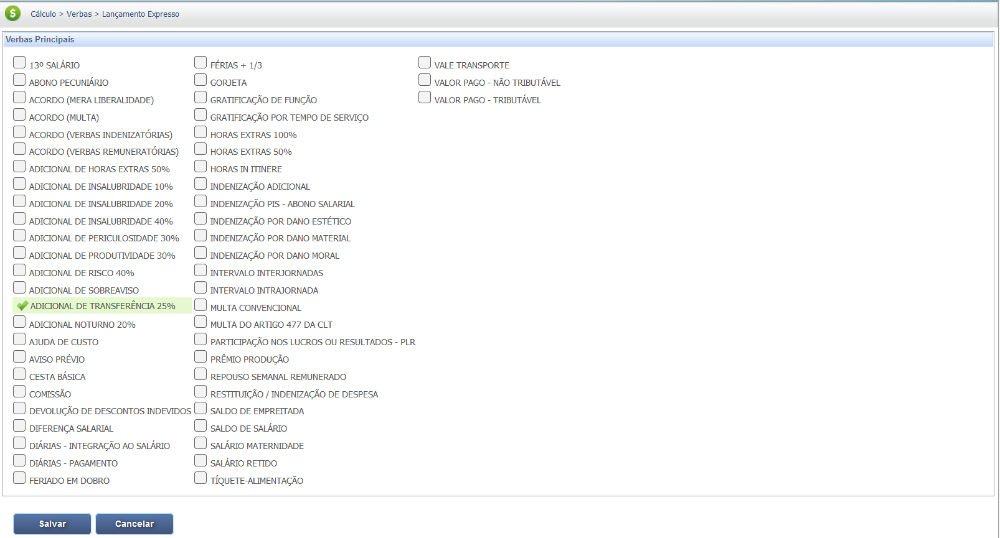
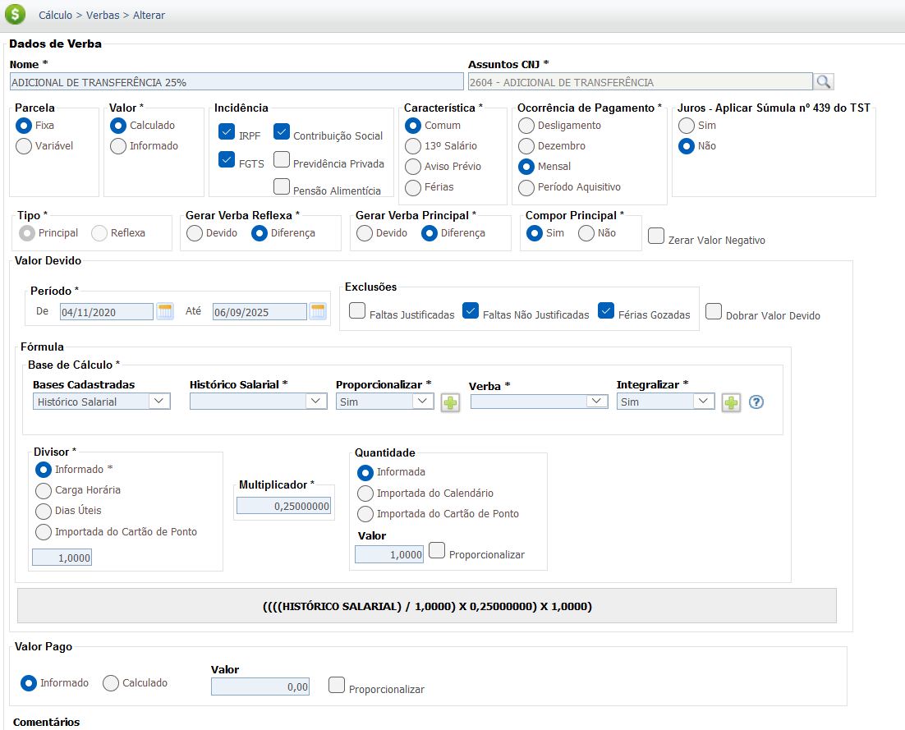
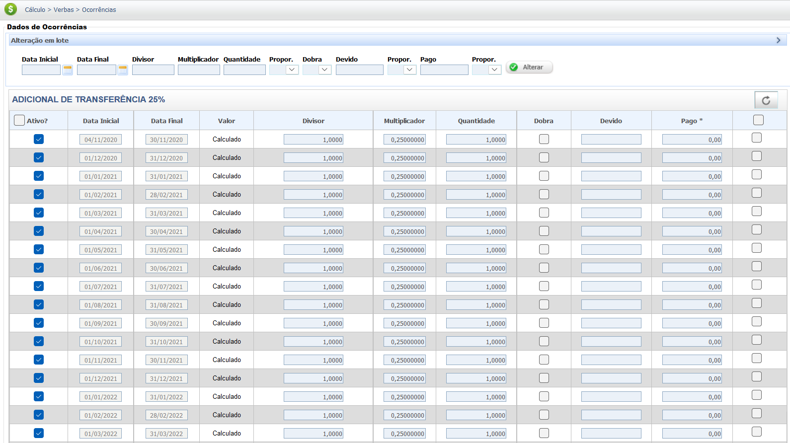

Adicional de Transferência
O Adicional de Transferência é uma verba de natureza salarial paga ao empregado que é transferido provisoriamente de localidade, conforme previsto no Artigo 469, § 3º, da Consolidação das Leis do Trabalho (CLT). O objetivo é compensar o trabalhador pelos custos e transtornos decorrentes da mudança temporária.
Para ser devido, a transferência deve ser para um local que não estava previsto no contrato inicial de trabalho e precisa ter caráter provisório. A jurisprudência, notadamente o TST, entende que a transferência se torna definitiva após um período prolongado (geralmente mais de dois anos), cessando a obrigação do adicional.
O valor do adicional de transferência é de, no mínimo, 25% do salário que o empregado recebia na localidade de origem. Este percentual incide sobre o salário, sem inclusão de gratificações, prêmios ou outros adicionais, exceto se houver previsão contratual ou normativa em sentido contrário.
Abaixo estão os critérios legais e jurisprudenciais para a concessão do Adicional de Transferência:
| Critério | Detalhe |
|---|---|
| Natureza da Transferência | Deve ser provisória. Se for definitiva, o adicional não é devido. |
| Localidade | Para localidade diversa daquela que resultou do contrato. |
| Percentual Mínimo | Mínimo de 25% sobre o salário do empregado. |
| Inclusão Contratual | A regra de provisoriedade não se aplica a empregados que, por contrato, exercem cargo de confiança ou tenham a transferência como condição implícita ou explícita (Art. 469, § 1º). |
Base Legal e Jurisprudência
O direito ao recebimento do Adicional de Transferência tem por base a legislação e os entendimentos a seguir:
Fontes Normativas
Consolidação das Leis do Trabalho (CLT) - Art. 469, § 3º:
- Direito ao Adicional:
Define o direito ao adicional de, no mínimo, 25% para transferência provisória.
Jurisprudência Consolidada
Súmula 29 do TST
Tese (Caráter Provisório):
Define que o empregado transferido tem direito ao adicional enquanto perdurar a situação provisória, cessando o pagamento se a transferência se tornar definitiva.
OJ 113 da SDI-1 do TST
Tese (Base de Cálculo):
O adicional é calculado sobre o salário, excluídas as despesas resultantes da transferência (como ajuda de custo e ressarcimento de aluguel), que não possuem natureza salarial.
Base de Cálculo e Deduções
Base de Cálculo
A base de cálculo do adicional de transferência é o salário base do empregado. Outras verbas, como ajuda de custo para mudança, reembolso de aluguel, horas extras ou comissões, são excluídas por terem natureza indenizatória ou não integrarem o conceito de salário para este cálculo, conforme o Art. 469, § 3º da CLT e a OJ 113 do TST.
O percentual mínimo é de 25%, mas pode ser maior se houver negociação coletiva ou previsão no contrato individual de trabalho.
Exemplo de Cálculo da Base:
Salário Base (Verba Salarial) = R$ 5.000,00
Ajuda de Custo (Verba Indenizatória, Excluída) = R$ 1.500,00
Base de Cálculo do Adicional = R$ 5.000,00
Cálculo do Adicional (25%): R$ 5.000,00 x 25% = R$ 1.250,00
Deduções da Base de Cálculo
Por ser uma verba de natureza salarial, o adicional de transferência integra a remuneração para fins de cálculo da contribuição para o INSS (Instituto Nacional do Seguro Social) e do Imposto de Renda Retido na Fonte (IRPF).
Isso significa que as alíquotas de INSS e IRPF incidirão sobre o valor total da remuneração (salário base + adicional de transferência), de acordo com as tabelas progressivas vigentes.
Exemplo de Base de Incidência:
Salário Base: R$ 5.000,00
Adicional de Transferência: R$ 1.250,00
Base de Cálculo para INSS/IRPF = R$ 6.250,00
OBS: A alíquota do INSS e IRPF será aplicada sobre R$ 6.250,00 (sujeito aos tetos e faixas).
Verbas Reflexas
O Adicional de Transferência, por possuir **natureza salarial** (Art. 469, § 3º da CLT e Súmula 29 do TST), integra a remuneração para todos os efeitos legais, gerando reflexos nas verbas abaixo. O adicional deve ser pago enquanto perdurar a situação provisória (Súmula 29 do TST).
O cálculo dos reflexos é feito pela integração do adicional ao salário-base, resultando na **remuneração completa** que serve como base de cálculo das verbas. (Ex: Salário-Base + Adicional de Transferência).
| Verba Trabalhista | Reflexo do Adicional de Transferência |
|---|---|
| 13º Salário | Integra a base de cálculo do 13º Salário (integral e proporcional), computando-se o adicional pago em cada mês do ano. |
| Férias + 1/3 | Integra a base de cálculo das Férias (vencidas e proporcionais) e o adicional constitucional de 1/3. |
| Aviso Prévio | Integra a base de remuneração para cálculo do Aviso Prévio (trabalhado ou indenizado). |
| FGTS (Depósito Mensal e Multa) | Incide sobre o valor do adicional, compondo a base de cálculo para o depósito mensal de 8% e para a Multa de 40%. |
Importante: Se a transferência se tornar definitiva, cessa o direito ao adicional, não havendo mais integração à remuneração para o cálculo das verbas futuras (Súmula 29 do TST).
Calculadora (Simulação)
Utilize esta ferramenta para calcular o valor do seu adicional de transferência. O percentual deve ser de no mínimo 25%.
Cálculo Simples
Lançamento no PJe-Calc
A seguir, confira o passo a passo para o lançamento da verba no PJe-Calc, utilizando a opção "Expresso":
-
Acessar Verbas e Escolher Lançamento: No menu de
navegação à esquerda, clique na opção Verbas para iniciar o lançamento. Após o
comando,
será exibida a tela para escolha do Lançamento da Verba. Escolha a opção Expresso.

- Seleção da Verba: O sistema abrirá as opções de verbas, escolha a verba Adicional de Transferência 25% e clique no botão Salvar 
-
Quadro de Verbas e Ações: O sistema exibirá um quadro
com os campos:
- Ações - contendo as opções de configurações da verba selecionada (parâmetros,
ocorrências e
exclusão)

-
- Parâmetros da Verba

-
- Ocorrências da Verba

-
- Excluir

- Verba Principal - verba selecionada para lançamento.
- Verba Reflexa - em que ao clicar no botão Exibir serão listadas todas as verbas reflexas ligadas a Verba Principal.
- Parametrização da Verba: Ao clicar no botão Parâmetros da Verba serão exibidas todas as configurações necessárias para a parametrização da Verba Principal. 
- Registro de Ocorrências: Ao clicar no botão Ocorrências da Verba serão exibidas todas as configurações necessárias para registro das ocorrências da Verba Principal. 